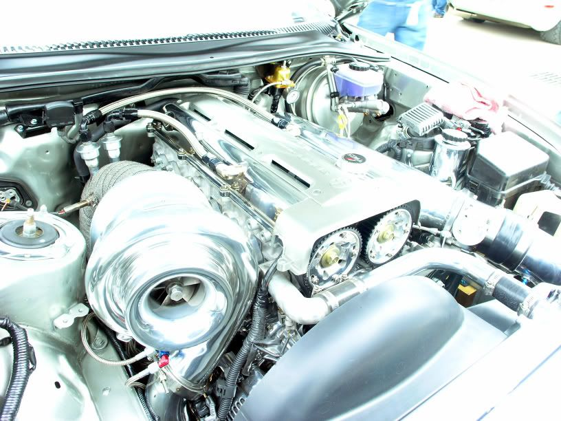

-
You absolutely do not want any filters on the valve covers. If you have one port filtered and the other hooked up to the intake manifold you'll essentially cause a vacuum leak and, if your pcv valve isn't working right, it can also cause a boost leak. You want maximum possible vacuum on the crankcase to evacuate as much pressure as you can. A lot of the big V8 racers use separate belt driven vacuum pumps to put a strong, steady vacuum on the crankcase and have actually had very impressive power gains from it. -
(like what satan was describing) alot of people (especially supra and domestic guys) are starting to run exhaust evacuation PCV setups… you can include a catch can in the middle if you want to, but you basically connect both PCV ports to the exhaust with check valves in between and have them entering the exhaust (post turbo) at an angle so that a vacuum is created. It's also nice to have a way to create a vacuum without sending oil back into the intake track.
1985 NA2T(now RB) * 1988 SS x2 * 1984 AE x3 * 2006 350Z

-
I think i'm going to run this setup too.
Rather than fiddle with the PCV system and catching the oil, I was thinking of taking the Catalytic Converter's pipe that goes to the front of the car for the AICV and plumbing a T in there with a check valve so that it would suck fumes from there (after all, the AICV pumps air into the cat to warm it up).
But now that my Cat is broken at the flange, I may have to make a test pipe with some pipe fittings. Also, they do not have to be at an angle (but I'm sure one pointing to the same direction as the flow would help)… the Bernoulli effect would create enough over-passing vacuum to pull the fumes anyway.

Copyright © 2006–. All rights reserved. Privacy Policy